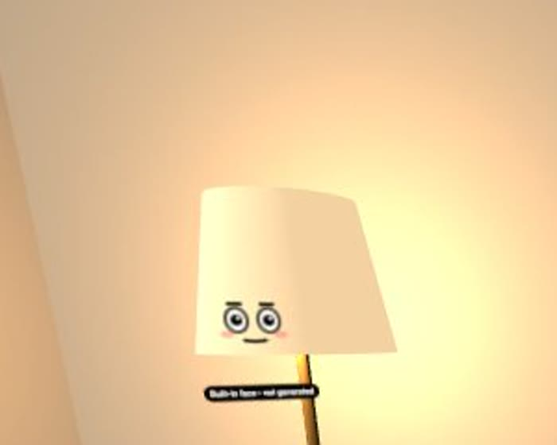

Couch
#001couch · 2.0 × 0.9 m
Built-in face, not generatedDrawn from the label
- expressions
- 5
- mouths
- 5
- draw calls
- 1
IWER emulator run · Oct 24, 2026
Quest 3 / 3S · mixed reality · Meta Global AI Developer Hackathon
A face appears on the real thing, blinks, looks at you and flinches when you poke it. Wake the lamp too, and the two of them start talking about you.
couch · 2.0 × 0.9 m
IWER emulator run · Oct 24, 2026
Your Quest already knows where the couch, the table and the lamp are (Space Setup). Point your hand at one: a dotted outline and a label chip. Pinch.
On the side that faces you, in its upper third, 1 cm proud of the surface, anchored to the room. It blinks, follows you with its eyes, and turns up to 40° toward you.
Your real fingertip and palm are tracked. A poke makes it jump, a slow stroke makes it purr and blush, a flick sends it spinning and grumpy.
Muse Spark gives each one a personality from what it is and what stands near it. With ask_object the couch talks to the lamp, and the lamp's eyes turn to the couch.
Every woken object becomes a card. Nine pockets per page; six spirits at most, because a site gets eight persistent anchors.

The two filled pockets come from a recorded run in the IWER emulator's synthetic room, not from a real home.
| Step | With MODEL_API_KEY | Right now (no key) |
|---|---|---|
| Pick the object | Pinch a labelled mesh | Same: pinch (or click in the browser) |
| Face | Muse Image sheet (10 images, ≈ $0.10) | Built-in face, labelled "not generated" |
| Personality, replies | Muse Spark with 6 tools | Puppet mode: you type its lines |
| Voice in | Muse Voice Transcribe | Typing |
| Voice out | Meta MMS-TTS (open weights, CC-BY-NC-4.0) | MMS-TTS after fetch-models.sh, else the browser voice, labelled |
| Face anchoring, gestures, gaze, gossip | Local | Local, identical code |
Never a canned reply: without the key every Meta step says "Setup required".
Open the app in a desktop or phone browser. You get a small labelled living room ("Browser diorama, not your room"). Click a piece of furniture, then tap, rub or swipe its face.
The same app ships with IWER, Meta's WebXR emulator. Press "Enter mixed reality (emulated)" and drive the emulated hands.
Run Space Setup so your furniture is labelled, open the app in Quest Browser, enter mixed reality, point and pinch.
Not in the headset. Quest's room model holds furniture-sized boxes from Space Setup, so Yadori wakes furniture there. Small things need camera access, which Quest Browser does not reliably give to web apps yet.
To the Yadori gateway, which sends it to Muse Voice Transcribe. No audio is stored. The spirits' voices are made on the gateway, with no third party.
It is placed on the couch's detected bounding box and fixed with a WebXR anchor. In the emulator test the face centre sits on the computed target within 1 cm.
No. Only the gateway reads MODEL_API_KEY; the app talks to /api and never sees it.